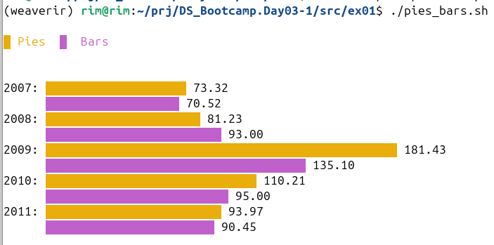
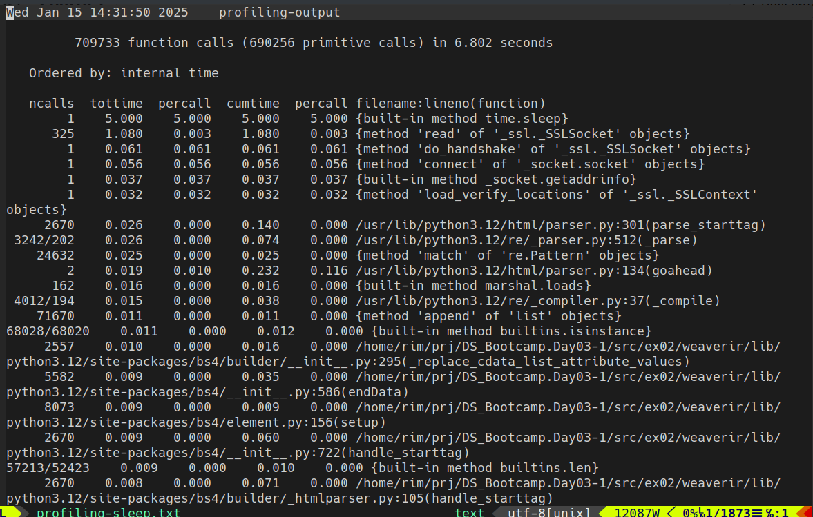
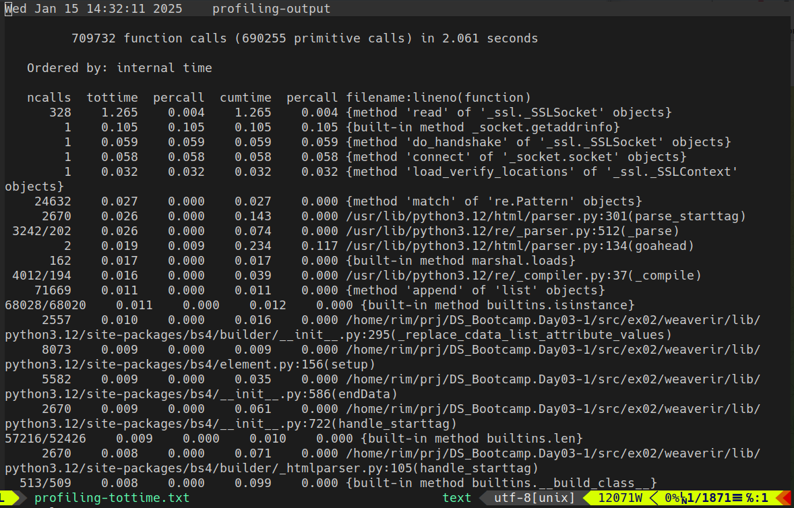
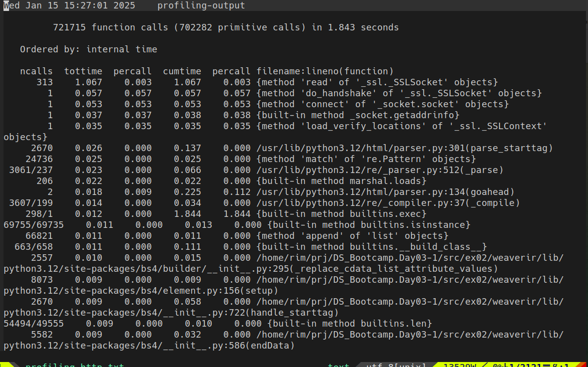
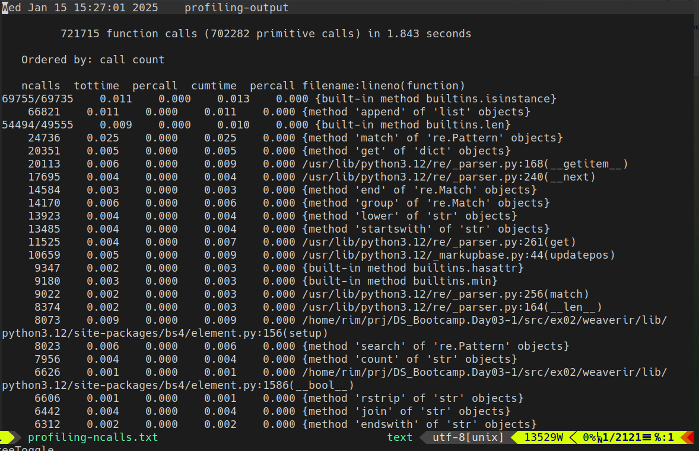
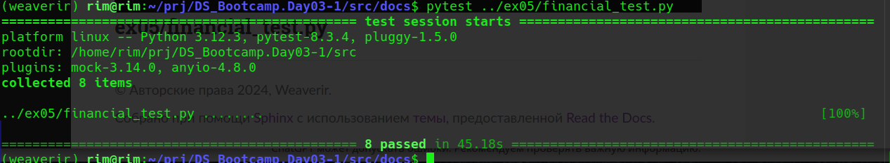

Welcome to inst many lib to Python’s documentation!
Содержание:
ex00/venv.py
Модуль для вывода пути к виртуальному окружению
- Возвращает:
Если вкл env „Your current virtual env is {Path}“
Если выкл env „Error env is off“
ex01/pies_bars.sh
Этот скрипт генерирует графики на основе данных, представленных в файле data.txt. Скрипт использует termgraph для визуализации данных.
ex02/librarian.py
Модуль для установки N-ного кол-ва библиотек из файла lib.txt
- ex02.librarian.archive_env()
Сохранение результата в ZIP архив.
Возвращает: None.
- ex02.librarian.check_virtual_env()
Проверяет виртуальное окружение, если выключено то выбрасывает исключение.
Возвращает: None.
- ex02.librarian.install_libraries()
Установка библиотек из lib.txt. Если файл нет, выбрасывает исключение.
Возвращает: None
- ex02.librarian.print_progress_bar(iteration, total, length=40)
Отображает прогресс-бар.
- Атрибуты:
iteration: текущий шаг
total: общее количество шагов
length: длина прогресс-бара
Возвращает: None.
- ex02.librarian.save_installed_libraries()
Сохраняет установленные библиотеки в requirements.txt и выводит на экран.
Возвращает: None.
ex03/financial.py
Модуль для извлечения фин данных с Yahoo Finance по тикеру и выбранному полю.
Использует requests для получения данных и BeautifulSoup для парсинга HTML.
- ex03.financial.fetch_financial_data(ticker: str, field: str) list
Получает финансовые данные компании с Yahoo Finance.
- Аргументы:
ticker (str): Тикер компании (например, MSFT).
field (str): Название поля таблицы (например, Total Revenue).
- Возвращает:
list: Список значений для запрашиваемого поля.
- Исключения:
ValueError: Если не удается найти запрашиваемое поле. requests.exceptions.RequestException: Если ошибка запроса к URL
ex04/financial_enhanced.py
Модуль для извлечения фин данных с Yahoo Finance по тикеру и выбранному полю.
Использует requests для получения данных и BeautifulSoup для парсинга HTML.
- ex04.financial.fetch_financial_data(ticker: str, field: str) list
Получает финансовые данные компании с Yahoo Finance.
- Аргументы:
ticker (str): Тикер компании (например, MSFT).
field (str): Название поля таблицы (например, Total Revenue).
- Возвращает:
list: Список значений для запрашиваемого поля.
- Исключения:
ValueError: Если не удается найти запрашиваемое поле. requests.exceptions.RequestException: Если ошибка запроса к URL
ex04/profiling-sleep.txt
Файл содержит данные о времени простоя в процессе выполнения программы, которые могут быть полезны для оптимизации.
ex04/profiling-tottime.txt
Файл содержит профилирование времени выполнения функций в программе, включая общее время исполнения.
ex04/profiling-http.txt
Файл содержит результаты профилирования HTTP-запросов, собранные для анализа производительности.
ex04/profiling-ncalls.txt
Файл содержит статистику по количеству вызовов функций, что позволяет анализировать узкие места в программе.
ex04/pstats-cumulative.txt
Этот файл содержит кумулятивные данные профилирования, которые показывают совокупную информацию о времени выполнения и вызовах функций.

ex05/financial_test.py
Этот файл содержит тестовые данные для диагностики потенциальных ошибок в работе программы с помощью библиотеки PyTest
